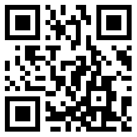
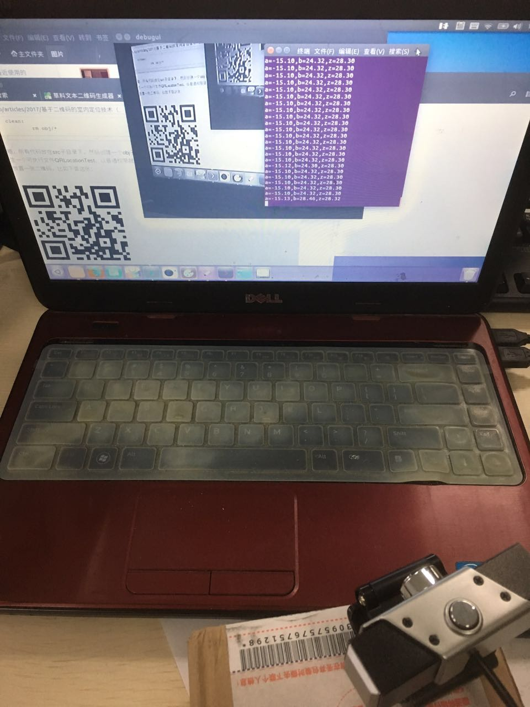
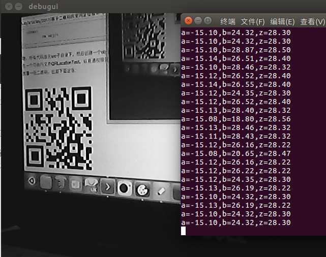

在《基于二维码的室内定位技术（一）——原理》中我已经讲解了计算α、β和z0的方法了，这里我就要实现它。
大致的思路是这样的：
（1）使用摄像头获取一帧；
（2）识别摄像头中的二维码；
（3）如果二维码的内容以“QRLocation,”开头，则继续第（4）步，否则返回第（1）步；
（4）识别“QRLocation,”后面的小数，作为二维码的边长
（5）识别二维码左右两条边沿，如果边沿太倾斜，则返回第（1）步，否则继续第（6）步；
（6）使用二维码的四个顶点坐标按前文所述的算法计算α、β和z0。
直接上代码，代码里注释很详细，而且我的代码一向很干净～
QRLocation.h
#ifndef QRLOCATION_H
#define QRLOCATION_H
/*
二维码的内容必须符合格式：
QRLocation,<qrSize>
其中<qrSize>是一个实数，表示二维码边长
*/
#include <opencv/cv.h>
#include <opencv/highgui.h>
#include <zbar.h>
//二维码倾斜阈值
#define QRLOCATION_INCLINATION_THRESHOLD 0.1
//调试窗口标题
#define QRLOCATION_DEBUGUI_TITLE "debugui"
//二维码位姿
typedef struct QRPose
{
//二维码中心所在铅垂线与O点构成的平面和Z轴形成的夹角
double a;
//二维码所在平面与X轴构成的夹角
double b;
//二维码中心到XOY平面的距离
double z;
}
QRPose_t;
//二维码定位算法
class QRLocation
{
public:
//初始化，第一个参数为摄像头编号，第二个参数为摄像头上下视角，第三个参数为是否开启调试窗口
bool init(int webcamIndex,double hViewAngle,bool debugUI);
//获取二维码位姿
bool getQRPose(QRPose_t* qrPose);
//销毁
bool destroy();
private:
//摄像头
CvCapture* capture;
//摄像头上下视角
double hViewAngle;
//是否开启调试窗口
bool debugUI;
//灰度图
IplImage* grayFrame;
//图片扫描器
zbar::ImageScanner scanner;
private:
//计算位姿（格式合法性判断）
bool getQRPose(zbar::Image::SymbolIterator symbol,QRPose_t* qrPose);
//计算位姿（算法）
bool getQRPose(zbar::Image::SymbolIterator symbol,double qrSize,QRPose_t* qrPose);
};
#endif
QRLocation.cpp
#include "QRLocation.h"
#include <string.h>
#include <stdio.h>
using namespace std;
using namespace zbar;
bool QRLocation::init(int webcamIndex,double hViewAngle,bool debugUI)
{
//打开摄像头
capture=cvCreateCameraCapture(webcamIndex);
//摄像头不存在
if(!capture)
return false;
this->hViewAngle=hViewAngle;
this->debugUI=debugUI;
grayFrame=0;
//配置zbar图片扫描器
scanner.set_config(zbar::ZBAR_NONE,zbar::ZBAR_CFG_ENABLE,1);
//如果开启调试，则创建窗口，名称为“debugui”，自动调整大小
if(debugUI)
cvNamedWindow(QRLOCATION_DEBUGUI_TITLE,CV_WINDOW_AUTOSIZE);
}
bool QRLocation::getQRPose(QRPose_t* qrPose)
{
//从摄像头中抓取一帧
IplImage* frame=cvQueryFrame(capture);
//图像为空
if(!frame)
return false;
//如果灰度图没有创建，就创建一个和原图一样大小的灰度图（8位色深，单通道）
if(!grayFrame)
grayFrame=cvCreateImage(cvGetSize(frame),IPL_DEPTH_8U,1);
//原图转灰度图
cvCvtColor(frame,grayFrame,CV_BGR2GRAY);
//如果开启调试，则显示灰度图
if(debugUI)
{
cvShowImage(QRLOCATION_DEBUGUI_TITLE,grayFrame);
cvWaitKey(50);
}
//创建zbar图像
Image image(frame->width,frame->height,"Y800",grayFrame->imageData,frame->width*frame->height);
//扫描图像，识别二维码，获取个数
int symbolCount=scanner.scan(image);
//获取第一个二维码
Image::SymbolIterator symbol=image.symbol_begin();
//遍历所有识别出来的二维码
while(symbolCount--)
{
//能够识别
if(getQRPose(symbol,qrPose))
return true;
//下一个二维码
++symbol;
}
return false;
}
bool QRLocation::getQRPose(Image::SymbolIterator symbol,QRPose_t* qrPose)
{
//首先得是一个二维码
if(symbol->get_type_name()!="QR-Code")
return false;
//获取内容
char data[128];
strncpy(data,symbol->get_data().c_str(),sizeof(data)-1);
data[sizeof(data)-1]=0;
//内容得是以“QRLocation,”开头
if(strncmp(data,"QRLocation,",11)!=0)
return false;
//获取二维码边长
double qrSize=0;
sscanf(data+11,"%lf",&qrSize);
if(qrSize==0)
return false;
//计算位姿
return getQRPose(symbol,qrSize,qrPose);
}
bool QRLocation::getQRPose(Image::SymbolIterator symbol,double qrSize,QRPose_t* qrPose)
{
//获得四个点的坐标
double x0=symbol->get_location_x(0);
double y0=symbol->get_location_y(0);
double x1=symbol->get_location_x(1);
double y1=symbol->get_location_y(1);
double x2=symbol->get_location_x(2);
double y2=symbol->get_location_y(2);
double x3=symbol->get_location_x(3);
double y3=symbol->get_location_y(3);
//左边沿纵向差
double leftH=y1-y0;
//右边沿纵向差
double rightH=y2-y3;
//必须保证0点高于1点，3点高于2点
if(leftH<0||rightH<0)
return false;
//左边沿横向差
double leftW=abs(x0-x1);
//右边沿横向差
double rightW=abs(x2-x3);
//不能太倾斜
if(max(leftW/leftH,rightW/rightH)>QRLOCATION_INCLINATION_THRESHOLD)
return false;
//上下视角一半的正切值，因为一直要用，所以先计算出来
double tanHalfView=tan(hViewAngle/2);
double leftLen=sqrt(leftH*leftH+leftW*leftW);
double rightLen=sqrt(rightH*rightH+rightW*rightW);
//左边沿的深度
double leftZ=grayFrame->height*qrSize/tanHalfView/2/leftLen;
//右边沿的深度
double rightZ=grayFrame->height*qrSize/tanHalfView/2/rightLen;
//得到中心点的深度
double z=(leftZ+rightZ)/2;
//计算b的正弦值
double sinB=(leftZ-rightZ)/qrSize;
if(sinB>1)
return false;
//得到b
double b=asin(sinB);
//两条对角线的系数和偏移
double k1=(y2-y0)/(x2-x0);
double b1=(x2*y0-x0*y2)/(x2-x0);
double k2=(y3-y1)/(x3-x1);
double b2=(x3*y1-x1*y3)/(x3-x1);
//两条对角线交点的X坐标
double crossX=-(b1-b2)/(k1-k2);
//计算a的正切值
double tanA=tanHalfView*(2*crossX-grayFrame->width)/grayFrame->height;
//得到a
double a=atan(tanA);
qrPose->a=a;
qrPose->b=b;
qrPose->z=z;
return true;
}
bool QRLocation::destroy()
{
//释放灰度图
cvReleaseImage(&grayFrame);
//销毁窗口
cvDestroyWindow(QRLOCATION_DEBUGUI_TITLE);
//释放内存
cvReleaseCapture(&capture);
}
接下来写一个测试程序：
QRLocationTest.cpp
#include "QRLocation.h"
#include <stdio.h>
int main()
{
QRLocation qrLoc;
if(!qrLoc.init(1,0.60,true))
return 1;
QRPose_t pose;
while(true)
{
if(qrLoc.getQRPose(&pose))
{
double aInDegree=pose.a*180/3.1415;
double bInDegree=pose.b*180/3.1415;
printf("a=%.2lf,b=%.2lf,z=%.2lf\n",aInDegree,bInDegree,pose.z);
}
}
}
代码中使用的摄像头的索引是1,如果你的电脑只有1个摄像头，要改为0。0.60是我的这个摄像头的上下视角的弧度。不同的摄像头上下视角不同，需要测量。
Makefile：
all:$(subst src/,obj/,$(subst .cpp,.o,$(wildcard src/*.cpp))) g++ $^ -o QRLocationTest `pkg-config opencv --libs --cflags opencv` -lzbar obj/%.o: src/%.cpp g++ -c $^ -o $@ clean: rm obj/*
嗯，所有代码放在src子目录下，然后创建一个obj子目录用来存在.o文件。make之后，产生一个可执行文件QRLocationTest。以普通权限就可以运行了。运行后，在摄像头前面放置一张二维码，比如下面这张：

如果你的显示器正常的话，这个二维码的边长应该5.7cm，它的内容则是“QRLocation,5.7”。
摄像头以一定的倾斜角拍摄二维码，场景如下：

可以看到控制台的输出：

可以看到输出还是比较准确的～